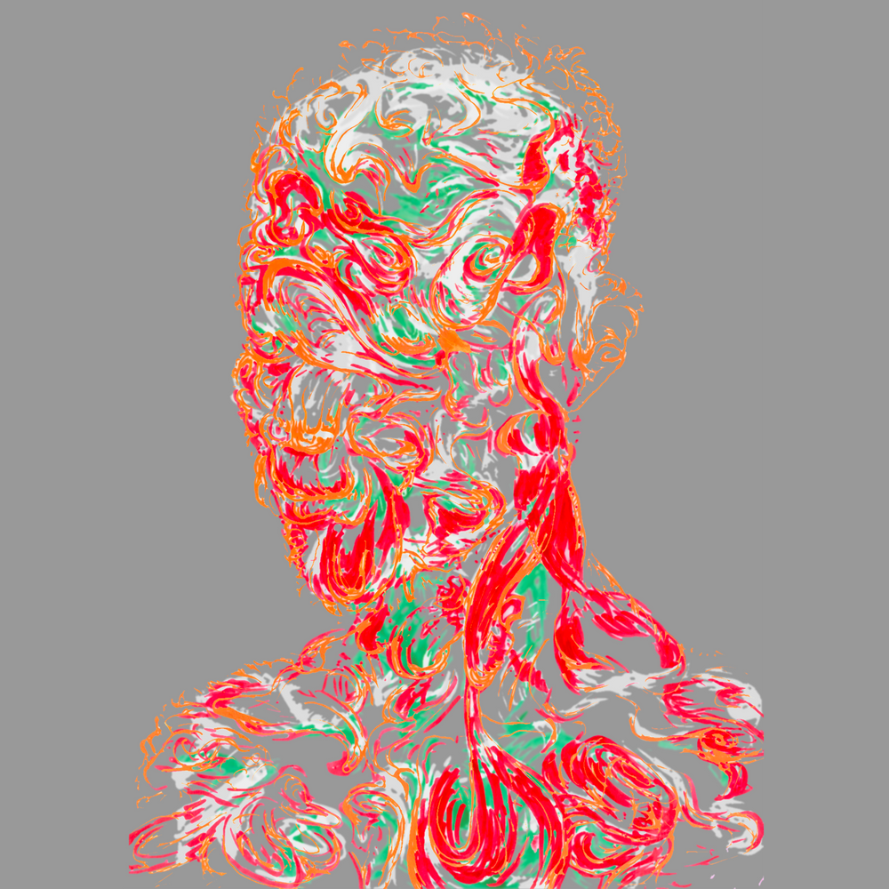
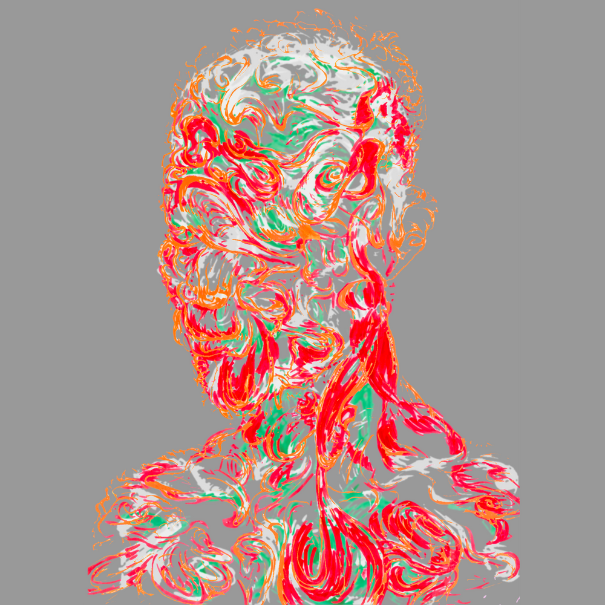

 


Crowd-funding @ Artizen
Locus has been curated for the Season 3 Official Selection of the Artizen fund for human creativity!
Here, creators engage their community to support projects, amplified by sponsor match-funds, and compete for the prestigious Artizen Prize.
If this project resonates with you, supporting it via Artizen is an ideal way to help make it a reality:
- Your contributions are matched by Artizen and sponsors, multiplying your impact to support the project.
- You earn Artifacts, a token of your stake per
Ξ0.01 / US$22contributed, asNFTsthat benefit both you and the project. - Artifacts increase the ranking of the project up the Artizen Prize leaderboard as well as earning it match-funding.
- Artifacts are investments in the impact of the project, a limited-edition stake that grows with the project and its community.
- Artifacts grant you access to private Locus and Artizen communities, and votes in future Artizen curations.
- Locus rewards you with backer perks, both now for your early support, and integrated into the future artwork, as follows…